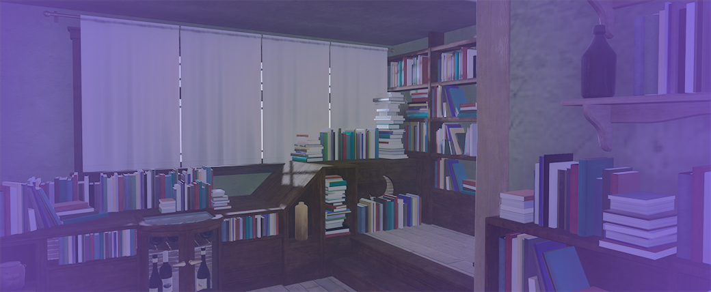

Course Outline, Samples and Assessment
Course Syllabi with Outlines
| Course Syllabi of Multimedia Communications & Computer Information Technologies |
|---|
| CIT-100, Comp. Fundamentals & Applications || CIT-111, Intro to Programming: Java |
| CIT-115, Information Technology Fundamentals || CIT-125, Web Design and Development |
| MMC-150, Interactive Front End Development || MMC-170, Virtual Design and Simulated Realities |
| MMC-250, Game Environments & Interactivity || MMC-260, 3D Modeling Design & Layout |
In MMC-250, Game Environments and Interactivity, one of the more difficult courses in the multimedia program. In this course, students take numerous multimedia elements and bring them together. When I first arrived at CCAC and inherited the Multimedia curriculum, MMC-250 was a course that really did not have a direction in the discipline. It focused upon the use of a 3D modeling software, Blender, despite the program already having two courses focused on another 3D program, Maya. This led to reexamining what the overall discipline was missing, and although it had a course to focus on a single game engine (Unreal), it lacked inclusion of the other most utilized game engine in the industry, Unity.
Therefore, within my first year of being in the discipline I reworked the MMC-250 course to incorporate and focus upon learning outcomes that would complement the use of the Unity game engine, expanding the skillsets of students and better preparing them for potential industry positions. The challenge for the change was to develop learning objectives that not only related to Unity, but also are practices for game development that are flexible to an ever-changing discipline. Overall, these changes have received positive feedback from both students and the advisory board for Multimedia Communications.
The nature of video game engines is that multimedia developers combine numerous multimedia assets together in a single software program to create a robust interactive experience. Students practice this, along with the other learning outcomes, by learning to use Unity, and also creating their own video game levels. Between the 3D assets and use of the C# Programming language students meet these course requirements and gain important experience of the different areas of game development, to assist them with making career choices in the future. Because of the development process that is used, this course specifically covers many of the program learning outcomes, except for, “Communicate effectively and appropriately with team members and players in the development of games and simulations”. Students will gain this experience through their capstone course, as a course like MMC-250 is integral in helping students have the experiences of different roles in video game design and development to help them decide their future endeavors.
Finally addressing the overall general education goals, this is an extremely technical course that pushes students to the limits of the technological competencies set forth by Middle States. Additionally, students also engage in critical thinking and problem solving by having to make decisions about how to complete a task, and deal with the ramifications of the interactions of users with the game environment and, troubleshoot errors that can arise through the development process. These skills are extremely important for students entering the work force, and overall, in my time at CCAC I am pleased with the results of the redesigned MMC-250 and the contribution it makes to our students’ educations.
Samples of Assignments
Continuing to upgrade my courses, I also work hard to make assignments engaging and meet learning objectives of the courses. With this, I have upgraded my assignment listings for classes using the suggested assignment template document provided by the CTL. This has helped to make project explanations more robust and clearer for my students. I intend on continuing to update my assignments in this format. See the following link: Project 1, for my MMC-270 3D Animation and Design Course.
Regarding written assignments, my activities for emphasizing the topic relating and learning objective and are active learning for students. When I attended the MAX2020 conference, I was introduced the idea of HyperDocs and how to utilize Google Docs to create interactive reading and writing assignments that emphasize engagement. I am excited to start integrating this into my courses, and have included an example for the MMC-270 Course that encourages students to critically think and interact with one another through Idea Boardz to share and brainstorm ideas. Another example of a written assignment is in MMC-170 where students are asked to review case studies from different areas of the industry that utlizes the Unreal Engine. To emphasiz - Writing is an important skill that is required in the Multimedia Communiction industries; however, we communicate through the creation of interactive media and projects that users engage in.
Exams in Multimedia Communications
Finally on the topic of exams in Multimedia Communications, this is just something we do not focus on. Multimedia Communications is an applied area of study where projects and practicing with software and programing languages is much more important to student success. Research skills are developed to help students with troubleshooting challenges that can arise during the production process, however there really is not a way to create an exam for students to test their skills applying these practices as each student project is different. The closest Multimedia Communictions courses come to an exam is an applied practical project. Students have one week to complete a project in the software package currently being studied in the course. The midterm practical is used to mimic a common part of the interview process where the interviewee is asked to complete a task in a set time frame or live development in a matter of hours with the interviewers present. Students are given one week to complete the practical and publish it by the due date and time. Some examples of midterm practical projects include:
To emphasize, even though Multimedia Communictions does not follow the standard idea of an exam, this is a process that in my experience is much more difficult for a student. With exams students do have a set time to complete an answer that brings concepts together. Not only do Multimedia Communcations students have to bring concepts together, they must also demonstrate time management, complete a project using skills and concepts that are new to many of them, troubleshoot and make sure the project functions as intended while finally packaging and preparing the project for deployment for other students in the class to review and critique.
Involvement in Assessment
Alongside serving as the secretary for the Research and Assessment subcommittee at the college, I constantly seek new ways to integrate assessment into the classroom. My primary area of assessment focus is on cutting edge technologies and inclusive technologies that encourage students of all backgrounds to engage in the class activities.
Further, the college has provided me with so many opportunities to continue researching and conducting assessment in my courses through the use of the CQI funding. Some of my projects include:
- Fall 2021, Raspberry Pi in the Classroom - In Data Analytics, one area that many find themselves working with is machine learning. I wanted to explore the potential of offering a course in the Data Analytics program that focused upon Artifical Intelligenca and Machine Learning. The CQI provided me with the funding to obtain 30 Raspberry Pi computers to be used in the created course but also other CIT courses offered at North Campus.
- Spring 2022, Flooping the Classroom - Feedback that I receive on SOSOs has been polarized regarding critiquing of student projects. There are students who are disappointed they cannot see one another's work while I have other students who are thankful they do not need to see or endure a critique. For the last several years this has been an area of feedback I have reflected on and discovered the website Floop. In Spring of 2022 through CQI funding I will utilize Floop to provide an interactive and anonymous means for students to review one another's work and provide feedback. I am excited at the potential of this website as a means for all students to be able to participate and also build up from anonymous feedback to identified work and feedback.
- Spring 2022, Parlay in Asynchronous Classrooms - Parlay is a website that lets teachers create guided discussions that can be set to anonymous for students and track the students' interactivity, participation and responses in conversations. The tool is an excellent resource for both Face to Face and online courses. The learning gap I am examining with this is the equality of student experiences in these two types of courses. Through the use of Parlay I hope to provide students who might have difficulty speaking a way to participate in conversations. Specifically for asynchronous courses, the interactive and real time feeling of Parlay should help bridge the feeling of disconnect that can be a stressor for many students in online courses.